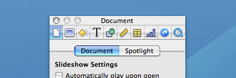
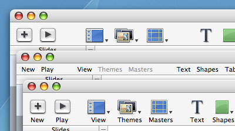

Synergy
Monday, March 26, 2007 17:00 
nounIn the past I have referred to the relation between the name or text label of an icon and the actual icon. It's a relation that is of great and yet under-appreciated importance.
The interaction or cooperation of two or more organizations, substances, or other agents to produce a combined effect greater than the sum of their separate effects : the synergy between artist and record company.
Application Icons
When it comes to product creation all developers should be aware of the fact that giving a name to a product has a lot of consequences. Names are far to often chosen based on their coolness, based on a hype such as using numbers in a name, or abbreviations. Guy Kawasaki wrote an excellent simple guide, called The Name Game, to find a name for your company or product, I'd suggest everyone to read that.
A name is THE thing people will remember you by. Users will share their experiences to your other potential customers based on you applications name, they will search on google using the name to find reviews, you are going to see your product name plastered all over the web and other places. Choosing a name doesn't have to be hard, but it's a hurdle that when failed taking could have bad consequences in the future.
The name of an application should in my opinion be a summary of what the subject and functionality of your application are. The exercise I would suggest is to summarize the applications ability in just a few words. I do that every time I work on a new icon project to acquire the essence of the application, it's not easy but it's an enormous help to find a visual metaphor.

Above are some good examples of application icons and names that have no or a very thin relation. And when looking at the combinations unbiassed I don't think anybody would be able to tell what the applications did based on their name, icon or the combination.
In a previous article called Obviousness, I wrote the following about the level of difficulty to create an icon.
In most cases the name and the functionality of the application will be the main clues where to start. One thing I can tell in advance is that it will be far easier to create an icon for a small app then for a big bulky feature saturated application. And the reason is simple: if you have to convey "subject and functionality" and the application is able to do a lot with a lot, you will have to make some good decisions. For a one trick pony it will be a lot easier to find the appropriate visual metaphor.Ideally the name and icon of an application should repeat each other to enforce impact.
Although starting of by finding a name and icon that convey the "subject and functionality" of your application, it definitely won't imply success or ease of recognition. If your icon or name is one of many within a generic category you will want to be different on purpose. But creating a brand based on something non-obvious will take you more time and more energy to get across, simply because things such as originality and repeated exposure are then required.
Either way, when building a brand it's important to communicate a single strong message. Disco is an example where we made the conscious decision to be different, but the name and icon convey one message together and repeated exposure was used to make the icon and name meaning well known.
Toolbar Icons
The relation between a toolbar icon and it's text label are of arguably even greater importance for a user. Most applications contain over a dozen of toolbar icons and users tend to interact a lot with them. One thing we as Mac developers should be very happy with is that fact that "almost" everywhere where there is a small icon there also is a text label attached to it. In many of the Windows applications available, there are interfaces littered with tiny icons that have no explanatory text label. I can assure you that from an interaction point of view it's one of the worst things you can throw at your user. The assumption that icons are THE solution for everything is just absurd, they can be of good help though.

When an icon is chosen badly they can either not say anything and cause confusion, or say the wrong thing and cause mistakes. Even if they are well created there is no guarantee that they will convey your intended message perfectly. Especially the smaller icons (14/16/24/32 pixels) have a very limited set of messages they can convey, even more so when used without a text label.
They say "an image can say more then a thousand words" and that's exactly the problem. We tend to interpret an image based on a lot of things, culture and experience are just two of them. And icons, no matter what size they are, will say more then a thousand words when used on their own.
Deciding what toolbar items you are going to put in your interface isn't as easy as most people think. You have to ensure that your application shows "what is needed when it's needed". Since the amount of toolbar items you can show by default is limited, deciding what icon and what 1 or 2 text labels to pick that describe it's potential complicated function is very important.

Icon text labels need to be brief and there for need to be chosen carefully. As seen above a single icon text label often doesn't even come close to explaining what action it will execute. Same goes for a standalone icon. That's not bad, that's just how things are. The magic happens when you know the limitations and make sure the two, the icon and the text label, convey a single message.
Conclusion
An image can say more the a thousand words, and a word can say more then a thousand images. When used together in the right way they can be a powerful filter to convey one targeted message.
6 comments Add Comment Email post Digg post
Pixel Bits
Friday, March 23, 2007 13:17
For those reading my blog and interested in interface and icon design there are two websites I have been wanting to refer to for quite a while.
Jorn is our intern at madebysofa, he has been with us since the middle of february and he will stay with us until the summer. He is a studies interaction design at the Willem de Kooning academy in Rotterdam, and has joined us in our quest to create better software experiences. As part of his internship he is (trying) keep his weblog updated with some articles about the things that he does with and for us.
Hugo is a good friend and colleague at madebysofa who has since recently been very successfully doing a lot of icon design projects for a variety of clients.
We at madebysofa are very happy and glad that we have such an experienced team when it comes to visual and interaction design.
Jorn is our intern at madebysofa, he has been with us since the middle of february and he will stay with us until the summer. He is a studies interaction design at the Willem de Kooning academy in Rotterdam, and has joined us in our quest to create better software experiences. As part of his internship he is (trying) keep his weblog updated with some articles about the things that he does with and for us.
Hugo is a good friend and colleague at madebysofa who has since recently been very successfully doing a lot of icon design projects for a variety of clients.
We at madebysofa are very happy and glad that we have such an experienced team when it comes to visual and interaction design.
2 comments Add Comment Email post Digg post
Night Sight
Thursday, March 22, 2007 14:30
This time I won't apologize for the fact that I haven't written any post in the last few months. But I will briefly give an overview of what I have been doing.
madebysofa
Late last year 2 friends and I set up a new mac software company called madebysofa. We then also released our first product called Checkout, a brand spanking new and easy to use point of sale for the mac. The product is a result of about 2 years of active development. We now work 5 days a week on further developing this product.
The other side of madebysofa is based on consulting and collaboration. Due to the composition of our group we are capable of providing professional interface and interaction design as well as marketing and technical consulting for software developers. We have done this and still do so for a large variety of small and large software companies around the world.
Disco
Disco is the roller-coaster project I initiated with Austin Sarner half way last year. Re-inventing disc burning wasn't easy but the result is something we are proud of.
jasperhauser.nl
In the near future my website and the services I provide will go through a change. It will basically mean that I will no longer provide the services under my own name and company, instead they will be moved under the madebysofa label.
madebysofa
Late last year 2 friends and I set up a new mac software company called madebysofa. We then also released our first product called Checkout, a brand spanking new and easy to use point of sale for the mac. The product is a result of about 2 years of active development. We now work 5 days a week on further developing this product.
The other side of madebysofa is based on consulting and collaboration. Due to the composition of our group we are capable of providing professional interface and interaction design as well as marketing and technical consulting for software developers. We have done this and still do so for a large variety of small and large software companies around the world.
Disco
Disco is the roller-coaster project I initiated with Austin Sarner half way last year. Re-inventing disc burning wasn't easy but the result is something we are proud of.
jasperhauser.nl
In the near future my website and the services I provide will go through a change. It will basically mean that I will no longer provide the services under my own name and company, instead they will be moved under the madebysofa label.
1 comments Add Comment Email post Digg post
Pixel vs Vector
Monday, November 13, 2006 14:13
Last week Daniel Jalkut (Red Sweater Blog) touched some of the more practical challenges of resolution independent user interfaces. This weekend Sven-S. Porst (Quarter Life Crisis) wrote a more in depth and interesting post on this, slightly confusing form some, topic.
Sven-S clearly understands what he is writing about. It's not about the system being able to show bigger icons and interface elements, it's mainly about providing more detail in the same screen area using high density displays in the future.
While some objects such as buttons and simple graphics will indeed be good to create using vectors, creating application and toolbar icons in vector is generally speaking a bad idea. Not only because drawing vectors requires a lot of GPU cycles, but also because some things just can't be done with vector compared to pixels.
Edit: The iconfactory posted some great additional information for developers. Make sure you also read their previous post on the subject. And while you are at it don't forget to read my previous post.
And even with all the new technology we have, the basic facts about low-pixel count situations remain true: Graphics in which those few pixels are carefully and consciously placed will look better than those created from generic vector graphics. Only in a few lucky situations we will be able to get equivalent results from cool vector graphics tricks.
Sven-S clearly understands what he is writing about. It's not about the system being able to show bigger icons and interface elements, it's mainly about providing more detail in the same screen area using high density displays in the future.
While some objects such as buttons and simple graphics will indeed be good to create using vectors, creating application and toolbar icons in vector is generally speaking a bad idea. Not only because drawing vectors requires a lot of GPU cycles, but also because some things just can't be done with vector compared to pixels.
Edit: The iconfactory posted some great additional information for developers. Make sure you also read their previous post on the subject. And while you are at it don't forget to read my previous post.
10 comments Add Comment Email post Digg post
Fire Starter
Tuesday, November 07, 2006 15:30
This summer when Austin and I started talking about Disco, Disco was just a Disc Copy application, hence the name. Born out of the wish to create an app that made some burning tasks easier, Disco soon became more the just some app that could copy discs.
I always had the hope that the name "Disco" would be an internal work name. But as the project came along we all realized the strength of the name. Especially in light of the effort we made to make the app "fun" to use. But he prospect of having to create an icon for an app with that particular name wasn't going to be very easy.
Obviously the corny stuff like just a disco ball, colored lights, just about the whole Saturday Night Fever prop department passed our thoughts. At some point we thought about changing the name to something simple and descriptive such as Inferno, AfterBurn and what not to make it easier to create a visual identity. But instead of making it easier on me, that side track only made it harder to create something interesting and unique. With all respect, making yet another "disc with fire" icon wasn't going to be a real challenge.
Clearly, choosing a name for your project isn't easy. I think many developers underestimate the importance of choosing a good name for an application. There are many things to keep in mind, such as choosing something that is not yet in use, or choosing something that is copyright- or trademark-able. Choosing a name that is catchy and sticks to your mind, or one that is completely unused and very descriptive is hard. A combination is obviously best, but certainly not easy.
Back to the icon. So as is clear by the above I did not want to create the obvious for the stated reasons. Disco is not an average app, so we didn't want an average or corny icon. Which left me with quite a challenge.
Early on, even while we where researching and deciding on the final name, I sketched down a version that combined both the name and the functionality. Normally I would only focus on conveying the functionality, but as pointed out earlier I wasn't convinced that would result in something that would embody what Disco stands for.

So a disco ball with flames it was. I asked, my good friend and colleague at Madebysofa Hugo van Heuven, to create a 3d model of a disco ball for me as a starting point for the icon. He created an amazing photorealistic model and rendered over 10 differently lighted versions that we then combined in photoshop to create the basis of what was going to be the Disco icon.
3 months later, on a trip in France, I finally sat down to work on the final look of the icon. I had been doing a lot of research into how to approach the flames, and initially I wanted to do realistic flames, but for some reason that didn't feel good. It was too easy. I also spent a lot of time sketching out the directions of the flames, I wanted the flames to be very vivid and alive as if they where trying to grab the ball. I worked 2 days on getting the flame shapes to look like I wanted them to, when finally deciding the 3 flame was simply best.

Because I didn't want to create realistic red/orange/yellow flames, I already decided that the flames where going to be look like plastic, partially inspired by the Speed Download icon. I found myself choosing between a dark blood red color or just going with the black I used to set up the flames with. And I think looking back, choosing for the black flames fits best with the whole black/white theme of the application.

So there you have it. A very butchy dark rock and roll icon if I may say so. An icon that, even when used small, stays remarkably easy to recognize. And best of all, because it's such a simple and intricate (read unique) shape it was very easy to create a 2 color logo version for the website and print materials. I especially like how the basic shapes could just as well have been a disc with fire. It's funny to see how an object shape can be filled up with something that is entirely different from what one would expect.

The icon is just one piece of the puzzle. It's one very important part of the over all branding that makes Disco so unique. If you want to make a difference in the Mac software scene these days, focusing only on complying to interface guidelines and feature sets will no longer cut it. We are certainly not advocating the creation of applications that lack in functionality but look beautiful, creating an app that has great functionality is and should always be step one. With Disco, we tried very hard to make the application as simple to use as possible while adding tons of new and existing features under the hood. For some further reading, I'd suggest that you check out Jason Harris's post on balancing UI and features, available at MyDreamApp.com.
Edit: Some people have asked asked me why the icon "is so small", well the icon isn't. It uses the same canvas size as any other icon. It's just that compared to a circle or a rectangle the Disco icon will "seem" small. You can read more about this subject in my blog post about the creation of the Camino icon.
I always had the hope that the name "Disco" would be an internal work name. But as the project came along we all realized the strength of the name. Especially in light of the effort we made to make the app "fun" to use. But he prospect of having to create an icon for an app with that particular name wasn't going to be very easy.
Obviously the corny stuff like just a disco ball, colored lights, just about the whole Saturday Night Fever prop department passed our thoughts. At some point we thought about changing the name to something simple and descriptive such as Inferno, AfterBurn and what not to make it easier to create a visual identity. But instead of making it easier on me, that side track only made it harder to create something interesting and unique. With all respect, making yet another "disc with fire" icon wasn't going to be a real challenge.
Clearly, choosing a name for your project isn't easy. I think many developers underestimate the importance of choosing a good name for an application. There are many things to keep in mind, such as choosing something that is not yet in use, or choosing something that is copyright- or trademark-able. Choosing a name that is catchy and sticks to your mind, or one that is completely unused and very descriptive is hard. A combination is obviously best, but certainly not easy.
Back to the icon. So as is clear by the above I did not want to create the obvious for the stated reasons. Disco is not an average app, so we didn't want an average or corny icon. Which left me with quite a challenge.
Early on, even while we where researching and deciding on the final name, I sketched down a version that combined both the name and the functionality. Normally I would only focus on conveying the functionality, but as pointed out earlier I wasn't convinced that would result in something that would embody what Disco stands for.
So a disco ball with flames it was. I asked, my good friend and colleague at Madebysofa Hugo van Heuven, to create a 3d model of a disco ball for me as a starting point for the icon. He created an amazing photorealistic model and rendered over 10 differently lighted versions that we then combined in photoshop to create the basis of what was going to be the Disco icon.
3 months later, on a trip in France, I finally sat down to work on the final look of the icon. I had been doing a lot of research into how to approach the flames, and initially I wanted to do realistic flames, but for some reason that didn't feel good. It was too easy. I also spent a lot of time sketching out the directions of the flames, I wanted the flames to be very vivid and alive as if they where trying to grab the ball. I worked 2 days on getting the flame shapes to look like I wanted them to, when finally deciding the 3 flame was simply best.
Because I didn't want to create realistic red/orange/yellow flames, I already decided that the flames where going to be look like plastic, partially inspired by the Speed Download icon. I found myself choosing between a dark blood red color or just going with the black I used to set up the flames with. And I think looking back, choosing for the black flames fits best with the whole black/white theme of the application.
So there you have it. A very butchy dark rock and roll icon if I may say so. An icon that, even when used small, stays remarkably easy to recognize. And best of all, because it's such a simple and intricate (read unique) shape it was very easy to create a 2 color logo version for the website and print materials. I especially like how the basic shapes could just as well have been a disc with fire. It's funny to see how an object shape can be filled up with something that is entirely different from what one would expect.
The icon is just one piece of the puzzle. It's one very important part of the over all branding that makes Disco so unique. If you want to make a difference in the Mac software scene these days, focusing only on complying to interface guidelines and feature sets will no longer cut it. We are certainly not advocating the creation of applications that lack in functionality but look beautiful, creating an app that has great functionality is and should always be step one. With Disco, we tried very hard to make the application as simple to use as possible while adding tons of new and existing features under the hood. For some further reading, I'd suggest that you check out Jason Harris's post on balancing UI and features, available at MyDreamApp.com.
Edit: Some people have asked asked me why the icon "is so small", well the icon isn't. It uses the same canvas size as any other icon. It's just that compared to a circle or a rectangle the Disco icon will "seem" small. You can read more about this subject in my blog post about the creation of the Camino icon.
21 comments Add Comment Email post Digg post
Finally
Wednesday, November 01, 2006 10:19
Finally after a long time not taking time to write posts, this post should be the start of many to come soon. In the last 2 months a lot of things have changed on my side. Not only has Disco had a mind blowing kick start, but Checkout is also shaping up to become a very promising project to say the least. In the mean time we are also starting up a new company called madebysofa, which on itself takes bucket loads of time as well.
In the coming weeks I will do by utter best to write some posts on the creation of the Disco interface and icon. And I will also spend some time writing up something on the development of Checkout at madebysofa.com. So come back soon!
In the coming weeks I will do by utter best to write some posts on the creation of the Disco interface and icon. And I will also spend some time writing up something on the development of Checkout at madebysofa.com. So come back soon!
7 comments Add Comment Email post Digg post
The Xtorrent icon
Tuesday, September 12, 2006 11:59
A while ago David Watanabe announced he was working on a new application. Soon after that announcement he contacted me for the design of a new icon.
Now I'm never going to pretend to have created "the" best icon for an application, I always create what I believe in and what the client likes as well. The amount of users for an application such as this one will be so diverse that I will never be able to satisfy them all. Having said that, Xtorrent is the kind of application where you just can not easily depict the application's subject and functionality because what the app does just isn't simple. So creating an icon for this app was challenging both because of the attention it already had because of Davids previous applications and because of the nature of the application.
Not so long ago I wrote an article about Obviousness of an icon where I said the following:

Bittorrent is a file sharing technology. Mostly people see that as being able to download files (leech), but one also has to make a file available to download (feed). One of the key strengths of bittorrent how ever is that every downloadable file consists of small pieces, and as soon as you have successfully downloaded one of the pieces of a file it can be shared to others. Dramatically increasing the speed at wich people can share something.

Fairly quickly I bumped into the thought to just stick with a simple arrow kind of logo type. I have always been a big fan of the iPod shuffle adds and the shuffle pictogram. And finally saw a way to create something slightly similar.
So from the above bits and pieces I deducted 3 aspects I wanted to be in the icon. 1) feed, 2) leech, 3) pieces. The result of this combination is the X logo type. I then combined that with a modular object that displays the Xtorrent pieces status view to create an actual appealing icon.
Now I'm never going to pretend to have created "the" best icon for an application, I always create what I believe in and what the client likes as well. The amount of users for an application such as this one will be so diverse that I will never be able to satisfy them all. Having said that, Xtorrent is the kind of application where you just can not easily depict the application's subject and functionality because what the app does just isn't simple. So creating an icon for this app was challenging both because of the attention it already had because of Davids previous applications and because of the nature of the application.
Not so long ago I wrote an article about Obviousness of an icon where I said the following:
...in a lot of cases (the bigger apps, complex technologies) there simply isn't any easy or simple way to visualize what the app does. In those cases you might just have to come up with a more logo or pictogram like image. Those are the icons that heavily rely on their style.So the treatment of this challenge was pretty clear from the start. First I looked at the already existing bittorrent icon landscape and quickly realized it was one that hadn't had much attention yet. The bittorrent project logo wasn't very usable in my opinion. Secondly I decided early on that I wanted to stay close to the look and feel of the Acquistion icon.
Bittorrent is a file sharing technology. Mostly people see that as being able to download files (leech), but one also has to make a file available to download (feed). One of the key strengths of bittorrent how ever is that every downloadable file consists of small pieces, and as soon as you have successfully downloaded one of the pieces of a file it can be shared to others. Dramatically increasing the speed at wich people can share something.
Fairly quickly I bumped into the thought to just stick with a simple arrow kind of logo type. I have always been a big fan of the iPod shuffle adds and the shuffle pictogram. And finally saw a way to create something slightly similar.
So from the above bits and pieces I deducted 3 aspects I wanted to be in the icon. 1) feed, 2) leech, 3) pieces. The result of this combination is the X logo type. I then combined that with a modular object that displays the Xtorrent pieces status view to create an actual appealing icon.